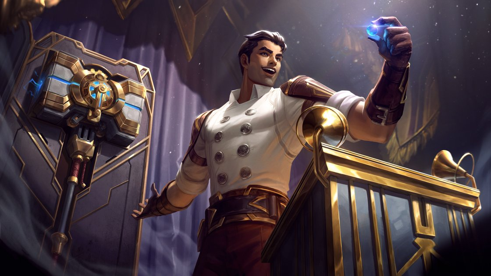

Jacyce
Người bảo hộ mai sau
Jayce là một nhà phát minh tài năng dành cả đời phòng hộ Piltover và theo đuổi không ngừng nghỉ sự tiến bộ. Cầm cây búa biến hình Hextech trên tay, Jayce dùng sức mạnh, lòng can đảm, và trí tuệ vượt trội để bảo vệ quê nhà. Dù nổi danh khắp thành phố như một anh hùng, nhưng anh chẳng quan tâm lắm. Trái tim của Jayce luôn đặt đúng chỗ, và ngay cả những người ghen tị với tài năng thiên bẩm của anh cũng phải biết ơn anh đã bảo vệ Thành Phố Tân Tiến.
Sinh ra tại Piltover, Jayce được nuôi dạy để tin vào những nguyên tắc đã làm thành phố trở nên vĩ đại: Phát minh. Khám phá. Không đến Zaun nếu có thể. Với khả năng thấu suốt máy móc, Jayce được vinh danh là tập sự trẻ tuổi nhất từng được Nhà Giopara – một trong những gia tộc hùng mạnh nhất Piltover – tuyển mộ. Chẳng ngạc nhiên gì, Jayce nhận đề nghị đó, và dành phần lớn những năm đầu xây dựng các thiết bị Hextech tiềm năng cũng như thiết kế các công cụ đa hình cho các lớp nghề ở Piltover: một cái cờ lê có thể biến thành xà beng, cuốc chim có thể biến thành xẻng, búa có thể biến thành một chùm tia tàn phá, nếu có đủ nguồn năng lượng. Mọi thứ Jayce chạm vào đều khiến những người đương thời thấy hổ thẹn.
Mọi thứ đều dễ dàng với Jayce, anh không thể hiểu được vì sao những người kia gặp rắc rối đến vậy với, theo anh, những khái niệm đơn giản. Do đó, gần như mọi người làm việc cùng Jayce đều thấy anh kiêu ngạo, thiếu tin tưởng, và không sẵn lòng chậm bước lại giúp đỡ đồng nghiệp. Thời gian dần trôi, khách hàng của anh ít dần, trong lúc đó, có sự rạn nứt xuất hiện giữa phong thái lịch thiệp và quyến rũ của Jayce.
Chỉ một người có thể sáng ngang với trí tuệ của Jayce, đồng thời duy trì sự thờ ơ trước thái độ cao ngạo của anh.
Tên người đó là Viktor.
Hai người gặp nhau trong một bữa tiệc Ngày Tiến Bộ, và ngay lập tức chia sẻ sự khó chịu khi phải ở đó. Không lâu sau, họ bắt đầu cộng tác. Viktor mở rộng chân trời trí tuệ của Jayce và thách thức nhiều giả định của anh. Trong lúc Jayce tìm cách cải thiện nhân tính thông qua công nghệ đa dạng, Viktor lại tìm cách giải quyết các vấn đề của bản chất con người, chẳng hạn như hao mòn thể chất hay định kiến phi logic. Họ liên tục tranh luận cùng nhau, nhưng cuộc xung đột không bao giờ trở nên quá mức – dù phương pháp khác biệt, hai người đều biết mục tiêu cuối cùng của họ là như nhau. Hơn thế, họ biết điều gì khiến cả hai bị đồng nghiệp tẩy chay: suy nghĩ không theo quy ước của Viktor, và sự thô lỗ của Jayce.
Cùng nhau, Jayce và Viktor phát minh ra bộ giáp cơ khí cho thợ cảng Piltover – một thứ đủ sức tăng cường sức mạnh của người sử dụng, nhưng cũng đủ nhẹ để họ không chìm nghỉm khi rơi khỏi tàu. Tuy nhiên, cả hai rơi vào ngõ cụt khi Viktor thiết kế phiên bản mới với hóa-kỹ có thể tăng mười lần sức mạnh của người sử dụng, nhưng cũng ngăn họ mệt mỏi, hoảng lạn, hay bất tuân lệnh cấp trên. Viktor coi đây là một tính năng tuyệt vời để giảm bớt tần suất tai nạn lao động, nhưng Jayce thấy trói buộc ý chí của nó là đạo đức. Cả hai suýt nữa đã gây lộn, và cuối cùng, sau khi Jayce cảnh bóa cho học viện về phát minh của Viktor, Viktor bị tước mọi danh dự và tẩy chay khỏi cộng đồng khoa học Piltover.
Viktor là người gần nhất Jayce có thể gọi là bạn. Quẫn trí khi tình bạn tan vỡ, Jayce quay lại làm việc một mình. Anh càng xa cách hơn. Khách hàng càng ít đi.
Trong lúc Jayce cô độc nghiên cứu, đội thám hiểm Nhà Giopara tìm ra một tinh thể lam nguyên chất sâu trong sa mạc Shurima. Jayce tình nguyện thử nghiệm (đặc biệt là khi nói các học giả khác của gia tộc sẽ không đủ thông minh để rút ra bất kỳ thứ gì từ đó), nhưng Nhà Giopara giao nó cho các học giả hòa nhã hơn để trừng phạt thói ăn nói không giữ ý của anh. Sau nhiều tháng, các học giả thống nhất: viên tinh thể vô giá trị. Một đống đá đã bị rút hết sức mạnh. Viên tộc trưởng thất vọng cuối cùng cũng giao nó cho Jayce, cho rằng ngay cả anh, với trí tuệ siêu phàm, cũng không thể tìm hiểu gì từ đó.
Có gì đó trong khối tinh thể kêu gọi Jayce. Không, còn hơn thế - nó hát với anh. Anh không thể giải thích, nhưng anh biết viên ngọc Shurima nắm giữ bí ẩn chưa được khám phá.
Anh dành nhiều tháng chạy đủ bài kiểm tra trên khối tinh thể. Cho vào máy ly tâm, thiêu ở nhiệt độ cao, đóng băng; anh thử nghiệm, quan sát, đặt giả thuyết và cặm cụi nghiên cứu. Jayce không quen phải làm việc vất vả: khối tinh thể là thứ đầu tiên kháng cự được học thức mênh mông của anh. Lần đầu tiên, anh nhận ra những người bên cạnh cảm thấy sao khi cố gắng giải quyết một vấn đề, chỉ để va phải những giới hạn của chính mình. Thật bực bội. Thật bất công.
Chắc còn tệ hơn rất, rất nhiều nếu bạn làm cùng một nhà phát minh kiêu căng gạt đi mọi nỗ lực của bạn.
Jayce nhận ra dù mình có không tin tưởng đồng nghiệp thế nào, không ai trong họ từ bỏ. Không ai ngừng tìm kiếm những thứ đã tạo nên Piltover: Tiến bộ. Khám phá. Nếu họ đã không làm thế, thì anh cũng không.
Và có thể anh sẽ cố tử tế hơn.
Có thể.
Jayce tiếp cận vấn đề từ một góc hoàn toàn khác. Thay vì cố thử nghiệm toàn bộ khối tinh thể, sao anh không thử với một mảnh nhỏ hơn? Jayce khoét một phần khối tinh thể và ngâm nó trong hợp kim lỏng. Khi cho dòng điện chạy qua đó, Jayce suýt thủng màng nhĩ vì tiếng nổ phát ra từ mảnh vỡ. Nhiệt tỏa ra, và trong chớp sáng, nó rực rỡ đến mức khiến anh gần như mù. Nó thật khó lường. Nó có thể nguy hiểm. Nhưng nó là tiến bộ. Jayce không thể ngăn được nụ cười nở trên môi khi anh làm việc thâu đêm suốt sáng.
Ngày hôm sau, Jayce ngạc nhiên khi thấy người bạn cũ Viktor đứng trước ngưỡng cửa. Nhận ra sức mạnh kinh hoàng của mảnh tinh thể, Viktor đưa ra một đề nghị đơn giản.
Sau khi bị trục xuất khỏi cộng đồng, Viktor bắt đầu thực hiện một dự án bí mật ở Zaun. Hắn cuối cùng cũng đạt được ước mơ – xóa nhòa mọi bệnh tật, đói khổ, thù ghét. Nếu Jayce tham gia cùng, cả hai có thể làm được nhiều hơn bất kỳ ai ở Piltover hay Zaun: họ sẽ cứu nhân loại khỏi chính nó.
Jayce đã nghe đoạn độc thoại đó từ Viktor trước đây. Anh không thích đoạn nó sẽ dẫn tới.
Viktor bảo Jayce hắn chỉ cần một thứ cho Tiến Hóa Huy Hoàng – một nguồn năng lượng cỡ khối tinh thể của Jayce. Jayce từ chối, bảo Viktor rằng thứ hắn thực sự cần là một kim chỉ nam về đạo đức. Viktor, người từ lâu đã mệt mỏi vì sự thô lỗ của Jayce, nhảy xổ vào anh, giật lấy khối tinh thể và đánh anh bất tỉnh. Nhiều giờ sau, khi Jayce tỉnh lại, anh nhận ra khối tinh thể đã bị Viktor lấy đi, nhưng mảnh vỡ kia vẫn không bị hắn chú ý hay quan tâm tới.
Dù Viktor đang dự định gì, hắn cũng chỉ làm đến mức này nếu đã gần hoàn thiện. Anh không biết nội dung của Tiến Hóa Huy Hoàng, nhưng chắc chắn nó chẳng tôn trọng ý chí tự do của kẻ khác đâu. Không để lỡ một giây, Jayce lấy mảnh vỡ và gắn nó vào cây búa biến hình khổng lồ - một phát minh hủy diệt từng bị anh bỏ xó nhiều năm trước vì thiếu nguồn năng lượng đủ mạnh.
Không biết Viktor đem khối tinh thể đi đâu, nhưng anh có thể cảm thấy cây búa Hextech rung động, dẫn anh xuống, hướng tới thành phố ngầm Zaun.
Mảnh vỡ, háo hức được hợp nhất với khối tinh thể, dẫn Jayce tới một nhà kho sâu trong khu Hầm Thấp. Bên trong tòa nhà, anh thấy một chuyện thật kinh khủng. Hàng tá thi thể nằm đó, bên cạnh là một đạo quân chiến binh kim loại bất động, đang chờ đợi khối tinh thể dập dờn.
Đây là bước đầu trong Tiến Hóa Huy Hoàng của Viktor.
Jayce mất dần tự tin khi sải bước lại gần Viktor. Anh và hắn luôn không bằng mặt, nhưng chuyện này hoàn toàn khác. Lần đầu tiên, Jayce nghĩ mình có thể ra tay với ông bạn cũ.
Anh gọi Viktor, chỉ vào đội quân người máy đang đứng đó. Jayce bảo hắn nhìn quanh xem hắn đang làm gì. Dù có ra sao – thứ Tiến Hóa này – không phải là sự tiến bộ. Thậm chí, trước sự ngạc nhiên của Viktor, anh xin lỗi hắn vì đã hành động như một gã khốn.
Viktor thở dài. Hắn chỉ đáp lại bằng hai từ: “Hạ hắn.”
Đám người máy lao vào Jayce, thoát khỏi đám dây nhợ kết nối chúng với khối tinh thể và đem đến cho Jayce một cảm xúc mới: hoảng loạn. Anh nắm chặt cây búa, nhận ra mình chưa từng thực sự sử dụng nó. Khi con người máy đầu tiên vào tầm, anh vung hết mức có thể, cảm thấy năng lượng của mảnh vỡ trào qua cơ bắp, tăng tốc chuyển động của cây búa đến khi Jayce lo lắng nó sẽ bay khỏi tay anh mất.
Nó đập vào bọn người máy, nổ tung thành một trận mưa kim loại. Mặc cho đồng đội bị tiêu hủy, những con khác vẫn không ngừng lao vào Jayce, cố gắng đánh anh bất tỉnh.
Jayce phân tích đội hình của làn sóng máy móc đang lao đến và cố gắng tính toán nhanh cách hạ gục số lượng lớn nhất có thể với số lần vung búa ít nhất. Thật vô nghĩa; chúng áp sát trước cả khi anh kịp vung một lần. Khi gục xuống đất dưới một cơn bão đánh đập, Jayce thấy Viktor nhìn mình, không phải đắc thắng, mà là buồn bã. Hắn đã thông minh hơn Jayce và đảm bảo tương lai nhân loại, nhưng hắn biết tương lai đó có cái giá của nó: hắn không thể để bạn mình sống sót. Jayce biến mất dưới một biển cánh tay kim loại vung vít.
Đó là khi Jayce, lần đầu tiên trong đời, quyết định ngừng suy nghĩ và chỉ đập phá mà thôi.
Không còn quan tâm đến sự an toàn của chính mình, Jayce dùng từng phân sức mạnh cuối cùng để thoát khỏi đám người máy của Viktor. Anh nhào tới khối tinh thể đang phát sáng, và đập nó với tất cả sức mạnh Hextech cường hóa cây búa của anh tích tục được, đập tan vật thể huyền bí ấy.
Viktor kêu lên kinh hoàng khi khối tinh thể tan thành mảnh vụn, làn sóng chấn động đẩy lui tất cả trong lúc đội quân người máy gục xuống không còn sức sống trên sàn. Nền móng của căn nhà kho rung chuyển, và Jayce tìm cách thoát được ngay trước khi tòa nhà sụp xuống.
Thi thể Viktor không bao giờ được tìm thấy.
Khi trở về Piltover, Jayce thông báo cho tộc trưởng về kế hoạch đáng sợ của Viktor. Rất nhanh, Jayce thấy mình trở thành chủ đề tranh cãi ở cả Zaun và Piltover. Được hoan nghênh vì hành động quyết đoán trong lúc khủng hoảng, Jayce trở thành hình tượng được yêu mến (ít nhất là với những ai chưa gặp anh), được đặt biệt danh: Người Bảo Hộ Mai Sau.
Jayce ít quan tâm đến sự ngưỡng mộ của cư dân Piltover, nhưng khắc ghi biệt danh ấy. Anh biết Viktor vẫn ngoài đó, âm mưu báo thù. Một ngày – có lẽ sẽ sớm thôi – một loạt rắc rối sẽ hướng tới Piltover.
Và Jayce sẽ ở đó chờ đợi.